Abstract
Surfaces that change color with viewing angle—from select butterfly wings and hummingbird feathers to passport holograms— communicate, authenticate, and display information without power or pigment. This is possible through structural color: vivid, view-dependent color produced by nanoscale geometry rather than pigment. However, existing methods for producing structural color are highly complex, lab-bound, and offer no direct user control over color output, color mixing, or angular encoding. We present MorphoChrome, a novel handheld optical system and workflow for interactive, programmable structural color fabrication. By exposing a holographic photopolymer film to user-controlled wavelengths and angles of coherent light, MorphoChrome directly inscribes the nanostructures required to produce iridescent color. Within the device, red, green, and blue laser diodes mix via optical beam combining to generate mixed color outputs. The device can be controlled either independently or through a digital twin user interface that provides physics-informed, live iridescent preview, and precise color selection for RGB color mixing. We evaluate MorphoChrome’s color gamut, color quality, resolution, and sub-second fabrication speed. We introduce a new resin-based adhesion process for integrating holographic films with 2D and 3D objects of diverse material composition (from PLA to fabric), and demonstrate a range of designs produced by our system through applications for colorimetric sensing, security, and biomimetic design.
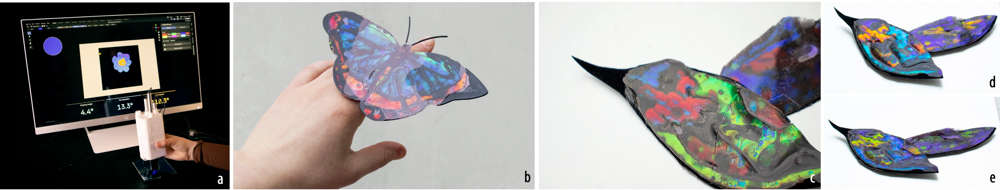
1 Introduction
Structural color, a mechanism to produce iridescent color with light-reflecting nanostructures, offers a new paradigm for angle-dependent programmable color interaction. Unlike pigments, structural color produces vivid, lightfast hues that shift with viewing angle — a phenomenon known as iridescence. Observed in butterfly wings, beetles, and certain gemstones, these effects arise from the interaction between light and the underlying microstructure rather than chemical composition. The appearance of structural color is governed by both illumination and viewing angle, encoding wavelength and direction into the visual result. Structural color has seen limited widespread use due to fabrication complexity. Historically, producing artifacts with structural color required working directly with naturally occurring materials — hummingbird feathers in 16th-century Mexican iridescent featherwork, and crushed beetle wings in 17th-century Basohli miniatures and European decorative arts. These practices demonstrate a long-standing global fascination with structural color, but reveal a key limitation: structural color can be collected and arranged, but not dynamically designed or programmed.
Current methods for synthetic structural color produce vibrant, angle-dependent hues, and programmable color interfaces enable interactive user control, yet these two lines of work have largely developed in isolation. Programmable color interfaces focus on pigment-based substrates — photochromic, thermochromic, or electrochromic — that emit color omnidirectionally and cannot produce angle-dependent effects. Other approaches that simulate iridescence, such as lenticular lenses or birefringent materials, produce discrete image switching or require precise viewing conditions, rather than continuous, programmable color shifts. Projection-based systems can produce structural color by first exposing images onto holographic film, and then transferring the film to flexible silicone backing layers. However, this method is lab-bound, and incompatible with interactive use due to multi-minute saturation times. Additional work has explored color-change as a response to mechanical input, and uses holographic film to produce color shifts driven by tension and deformation. These approaches are fundamentally manufacturing and mechanosensing paradigms, and treat structural color as an output of physical actuation rather than enabling direct user control over fabrication. As a result, users cannot interactively specify wavelength or exposure angle during fabrication; the color is pre-programmed by machine and then determined by the material’s mechanical state. Building on this body of work, we bring the essential parameters of structural color formation — illumination and viewing angle — under direct, handheld, interactive user control during fabrication.
We present MorphoChrome, a novel handheld system for interactive, programmable structural color fabrication. Our system creates programmable structural color through user-controlled encoding of the photonic structure itself at fabrication time: the user directly sets the exposure wavelength and angle that determine each region’s optical response, rather than selecting from a fixed, pre-fabricated design. By moving from fixed projection systems and mechanosensing workflows to a mobile, user-controlled device, MorphoChrome uses both color and angle as directly programmable parameters, giving users direct control — the ability to change wavelength output and view-dependent color effects via color-mixing and hand-angle tracking as they fabricate. Users write iridescent color onto surfaces by controlling both illumination angle and wavelength through a compact RGB laser device, supported by a live digital twin interface that previews angle-dependent color shifts in real time. Fabricating with MorphoChrome is fast: red, green, and blue exposures reach saturation in 184 ms, 620 ms, and 665 ms, respectively, supporting a continuous, direct authoring experience. While our primary workflow pairs the device with a digital tablet for tracked, high-fidelity input, MorphoChrome can also be used freehand, without the desktop setup, for custom or on-the-go authoring. In summary, MorphoChrome contributes:
(1) A handheld optical device for interactive RGB laser-based color mixing and fast color formation that enables direct spatial control over illumination angle and programmable structural color generation;
(2) A real-time preview interface that can control the device and simultaneously render a live display of iridescent color appearance as users fabricate;
(3) A fabrication pipeline integrating structural color film with UV-resin processes, enabling application to curved and irregular surfaces accessible to non-expert users;
(4) A technical evaluation quantifying MorphoChrome’s color gamut, color quality, resolution, and fabrication speed;
(5) Applications integrating structural color into interactive objects and surfaces.
3 MorphoChrome
MorphoChrome is an end-to-end, hand-controlled fabrication system for interactively creating structurally colored iridescent designs. The system consists of three components: (1) a handheld optical device, (2) a holographic photopolymer film “canvas”, and (3) a digital twin user interface for designing and visualizing the iridescent color generated in the film. By controlling three lasers and performing color mixing via beam combining within the device, users can update their color selection during the fabrication process. To create color-changing 2D and 3D objects for dynamic interaction, we provide a fast-curing resin-based adherence process.
3.1 Working Principle
When holographic photopolymer film is exposed to wavelengths of light within its sensitivity range, it forms nanostructures that reflect the color of the incident light, as shown in Figure 2. MorphoChrome creates structural color by exposing holographic photopolymer film adhered to a reflective metal backing using modified Lippmann photography physics, as shown in Miller et al.. By applying the film to a reflective backing, we create a standing wave within the film composed of incident and reflected light waves. This standing wave forms a light-reflecting structure consisting of layers with periodic refractive index variations: repeating layers of the polymer matrix that allow light to travel at different speeds. Differences in refractive index result in variations in reflected wavelength and therefore visible color.
After exposure, the film exhibits permanent iridescence, as it predictably displays different colors at different viewing angles (Fig. 2). This behavior arises from angular-dependent Bragg diffraction, in which layered nanostructures interfere constructively at specific angles. As viewing angle increases, red light may shift toward green, green toward blue, and blue into the ultraviolet. This iridescent spectral shift is governed by the Bragg condition for reflection holograms: λ(θ) = 2nd cos(θ) (1)
where:
• λ(θ) is the observed (reconstructed) wavelength at viewing angle θ;
• n is the average refractive index of the photopolymer;
• d is the fringe spacing (grating period);
• θ is the angle between the incident (or viewing) light and the normal to the holographic grating; θ = 0 corresponds to straight-on (normal) viewing. As θ increases, cos(θ) decreases, causing λ(θ) to decrease, resulting in a blue shift. This explains the observed progression of color with angle: red → green → blue → ultraviolet. As a result of the Bragg condition, the light exposure and viewing angle directly influence the perceived color. For example, when exposed to red light, the film reflects red. When multiple wavelengths are combined, the colors add constructively. Using additive color mixing with red, green, and blue incident light, secondary colors such as cyan, magenta, and yellow are produced.
The Bragg condition also governs the relationship between light exposure angle and viewing angle. When the film is exposed at a non-normal incident angle, the resulting nanostructures are written tilted relative to the film surface, encoding that angle directly into the grating geometry. As a result, the recorded color will only reconstruct — and therefore only appear — when the film is viewed at the corresponding Bragg-matched angle. This angular selectivity arises because constructive interference only occurs when the viewing geometry satisfies the same Bragg condition under which the grating was written. At all other viewing angles, the grating fails to satisfy the Bragg condition and the recorded color is suppressed. This means that by controlling the incident angle during exposure, the user directly programs the viewing angle at which a given color will appear — enabling angle-selective structural color that is invisible from most orientations and revealed only at the designed viewing angle.
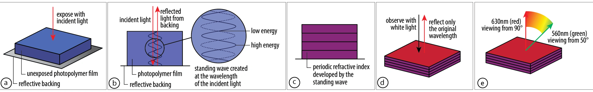
3.2 Optical Device Design
The integrated handheld optical system of MorphoChrome consists of a device body containing three laser diodes at selected wavelengths, two dichroic mirrors for color transmission and combination, and a detachable aperture tip (Fig. 4). Below, we describe the design of each component and the overall optical system. Laser Diodes: MorphoChrome incorporates three low-power laser diodes to produce multicolor, structural color output. We selected red, green, and blue laser diodes from Thorlabs for their high light intensity, compact size, and low power consumption. The laser diodes saturate the film, transitioning it from an unexposed blue state to the user’s desired color. Since lasers emit coherent light, they provide precise wavelengths without requiring optical bandpass filters, unlike LED projector–based systems. Each diode was selected based on spectral range, luminous output, and power input requirements. Because red, green, and blue lasers expose the film at different rates, the laser outputs are normalized relative to one another with digital control. Throughout this paper, we use fabrication speed to mean this per-channel color saturation speed — the exposure time required for a given wavelength to fully develop its structural color — rather than the time required for downstream steps such as resin curing (Sect. 4.5). Representative exposure energies, as reported by the film manufacturer, are:
• Red — 635 nm: 20 mJ/cm2
• Green — 532 nm: 30 mJ/cm2
• Blue — 450 nm: 80 mJ/cm2 Spectral range is critical, as holographic photopolymer film exhibits selective sensitivity within the visible spectrum. Laser diodes allow for sufficient exposure intensity while operating MorphoChrome at 5 volts from a laptop, without requiring an external power supply. Lens System Design: MorphoChrome’s optical system (Fig. 4) consists of an aperture mask and two achromatic lenses that together control spot size, color mixing, and stray light at the film surface. Prior to the lenses, the aperture mask [ThorLabs Precision Optical Pinhole, 5mm diameter] constrains the input beam diameter, suppressing stray light and ensuring uniform beam entrance across all three wavelengths. The two achromatic lenses, with focal lengths of 30mm and 35mm [ThorLabs Cemented Achromatic Doublets, 30mm and 35mm], correct for chromatic aberration across the red (635nm), green (532nm), and blue (450nm) laser wavelengths, ensuring all three converge to the same focal point at the film surface. This configuration produces an optimal working distance at which spot size is minimized and color mixing is maximized.
A focused beam of light stays sharp only over a limited depth around its focal point, characterized by the Rayleigh range: z R = πw 0 2/λ. For our measured beam waist (w 0 = 0.35 mm), z R is on the order of 0.6–0.9 m across the three color channels (606 mm for red, 724 mm for green, and 856 mm for blue). Because a user’s hand moves the device by at most a few millimeters from the film plane during operation — far less than this range — the beam radius and intensity at the surface stay essentially constant.
As a result of the lens system design, users can also choose to modulate output by varying the distance between the device and the film surface: at the optimal focal distance, the system produces the smallest, most intense spot, while increasing distance produces a larger, softer spot suitable for broader color areas. This distancedependent behavior, combined with MorphoChrome’s interchangeable aperture tips, gives users two independent parameters for exploring the spatial character of their color output. Housing: The MorphoChrome housing consists of a compact, 3Dprinted PLA enclosure (Fig. 3b). The exterior includes two user access points: an on/off button and a single cable for serial communication and power. The enclosure uses thin wall sections to optimize compactness and weight. Internally, the device design is modular and consists of a laser and color-mixing compartment, as well as a slot for a digital drawing pen (Sect. 4.1).
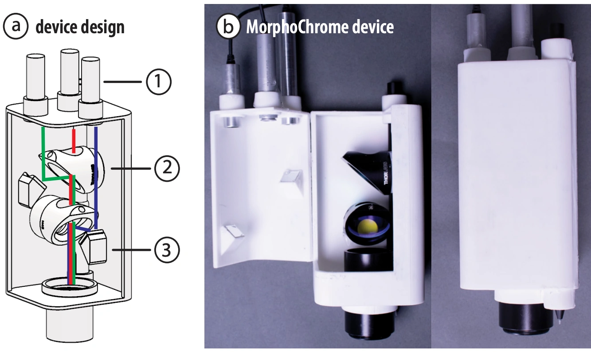
3.3 Color Mixing with RGB Laser Light
Red, green, and blue (RGB) colors, when combined at maximum intensity, are perceived as white light—a phenomenon known as additive color mixing. Pairwise combinations of RGB primaries produce secondary colors:
• Red + Green = Yellow
• Green + Blue = Cyan
• Blue + Red = Magenta In MorphoChrome, primary RGB laser light is vertically combined using the dichroic mirrors and internal mirror placement, producing secondary colors at the output aperture (Figure 4). To perform RGB color mixing, MorphoChrome uses two dichroic mirrors, the standard approach for modern projector color mixing. Each dichroic mirror transmits wavelengths of select frequencies while reflecting others. Two additional mirrors direct the laser beams into the first and second dichroic mirrors. Red is transmitted through both dichroic mirrors; green reflects off the first dichroic and passes through the second; blue is reflected off the last dichroic. This configuration combines three input beams into a single mixed output, enabling a continuous spectrum of secondary colors.
MorphoChrome uses pulse-width modulation (PWM) to regulate the laser intensity required for precise color mixing. By varying the duty cycle (i.e., the percentage of time a signal is on versus off), we can dynamically control the effective power output of each laser channel. Consequently, single-channel colors (e.g., pure blue) operate at high duty cycles, whereas mixed colors dynamically scale down individual intensities to maintain balanced additive mixing.
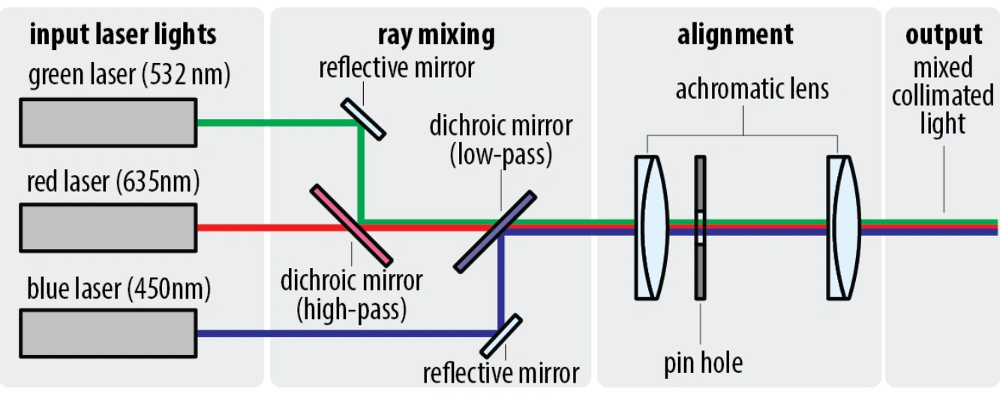
4 Fabricating Structural Color
In this section, we detail the practical fabrication pipeline for using the MorphoChrome system to fabricate a structurally-colored design.
4.1 Setup
To simultaneously capture user input and expose the film, we place a commercial drawing tablet [Wacom Intuos Pro Small] beneath the reflective backing for structural color formation. High quality mirrors are critical for preserving phase information of light output from the device and forming the nanostructures required for specular structural color creation. We use an array of four highquality mirrors [λ/8,Broadband Dielectric Mirror, Thorlabs] that are insulated and therefore do not interfere with the digital tablet pen and pad. The digital tablet pen is inserted into the slot in the MorphoChrome device body. By integrating the drawing pen into the device body, the underlying tablet can continuously track pen angle and position. Our dielectric mirrors satisfy the necessary, strict optical requirements for color formation without interfering with the electromagnetic communication between the tablet’s pen and the tablet itself.
4.2 Digital Twin Drawing Interface
To assist users in designing and visualizing iridescent color effects, we developed an interface that integrates input from a drawing tablet with a live 3D Blender viewport and the MorphoChrome hardware (Fig. 5). The interface provides six preset light exposure colors: red, green, blue, yellow, magenta, and cyan (Fig. 5a-1). Each preset corresponds to two color encodings: one used in the shader model and one calibrated for the laser hardware. When the user selects a color, the system updates the surface values shown in Blender and sends the corresponding command to the laser device.
During use, the interface shows two live overlays: a color preview that estimates the holographic color at the current pen position and current viewing angle (Fig. 5a-2), and a viewing-angle display that reports the angle between the camera direction and the surface normal (Fig. 5a-3). Together, these overlays let the user see both the predicted appearance and the geometry that produces it (Fig. 5b).
The interface also visualizes how incident light exposure angle affects the iridescent color effects. If tilt data is available from the tablet, regions exposed with the pen held near vertical show the standard angle-dependent shift, while regions exposed at larger tilt angles reach their peak colors at correspondingly shifted viewing directions. For hardware that does not provide tilt, the interface also includes a manual tilt control. By giving users explicit control over the parameters that govern structural color, alongside live feedback on how their drawing technique impacts the design, the interface acts as a high-fidelity digital twin for the fabricated output (Fig. 5c).
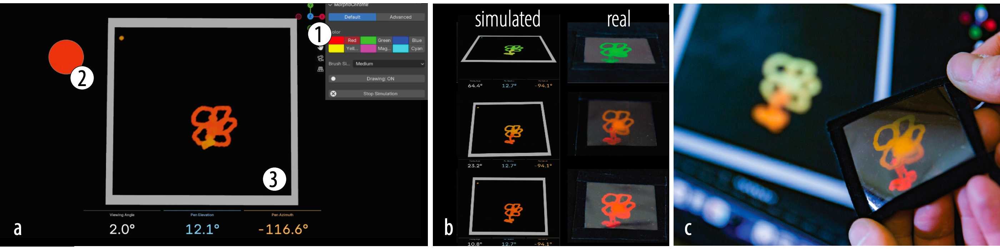
4.3 Interface Implementation
Iridescence model. The viewport shader gives a real-time approximation of how the exposed film changes color with viewing angle. We use a simplified model based on Bragg-like wavelength shift. Given a viewing angle, the corresponding angle inside the material is computed by applying Snell’s law:
sin θint = sin θair / n
Here, n is the refractive index. For each of three reference peaks, the reflected wavelength is shifted as:
λ(θ) = λ0 · cos θint / cos αint
λ0 is the base wavelength and αint is the internal angle associated with the pen tilt recorded at exposure time. We use default peak wavelengths of 640 nm, 540 nm, and 460 nm. With no tilt, this simplifies to λ(θ) = λ0 cos θint.
Each shifted wavelength is clamped to the visible range and converted to RGB with a precomputed lookup texture. The three responses are then weighted by the stored exposure values and added together:
Cout = η ∑i wi · LUT(λi(θ)) + Cbase
where η controls overall intensity and C_base is a constant base reflectance. For exposed surfaces, the base term is set to zero so that unexposed regions remain black. The resulting color is combined with a glossy surface shader to approximate the look of the photopolymer film. Additionally, the wavelength shift computed in Equation 3 is a physically accurate model of the film’s Bragg-based color response. However, the exact relative intensity of each spectral peak follows a very narrow Gaussian angular envelope, and applying this directly in the UI would render off-peak colors nearly invisible in the preview. To remedy this, the shader computes this envelope but deliberately suppresses it in the main color output, approximating rather than physically applying it, so that the full range of angle-dependent color remains legible to the user for design purposes.
4.4 Device Communication
The interface sends color selections over serial to a microcontroller that drives the three laser diodes. Because the hardware’s intensity response does not follow standard RGB ordering, each palette color maps to an experimentally calibrated RGB triplet: red (255, 0, 0), green (0, 255, 0), blue (0, 0, 255), yellow (10, 255, 0), magenta (51, 0, 255), and cyan (0, 127, 255). Stored Surface Data: The surface stores two key parameters at each vertex: exposure color and pen tilt. The exposure color determines the contribution of each spectral peak; pure primary colors (red, green, blue) activate individual peaks, mixed values activate multiple peaks simultaneously, and black yields no iridescence. Meanwhile, the system records the pen tilt for each input sample. This is stored as a normalized value between 0 and 1 and converted back to an angle in the shader. As a result, different regions of the same surface can exhibit distinct, angle-dependent iridescent responses depending on how they were exposed.
4.5 Adhering the Physical Film
Standard adhesives can swell the holographic film and destroy structural color. To fabricate application objects using the exposed film, users apply a moderate amount of UV-curing resin [CRAFT RESIN 300g UV Resin Kit Hard Type Low Viscosity] to the target surface. To prevent the film from swelling during this process, we experimentally determined that first heating the holographic film for 20 seconds at 50 degrees Celsius on a hot plate, polymer side up, reduces color shift during resin adhesion. We then coat the backing surface or object with a 3 mm high layer of resin and place the film smoothly onto it to prevent air bubbles. Using a handheld UV light operating in the 390–410 nm range, the resin is cured until solid, typically within 10–30 seconds depending on the application. Once cured, the protective plastic layer of the film is peeled away, leaving the structurally-colored holographic photopolymer layer adhered to the object. This process adheres reliably to a diverse range of backing materials and geometries: for example, we adhere the film to PLA (the 3D-printed butterfly, Fig. 1b), a curved surface (the watering can, Sect. 7.3), and velvet fabric (the hummingbird brooch, Fig. 10).
5 Optical Device Control
In this section, we detail how color output from the laser diodes is established and controlled. To achieve colors beyond pure red, blue, and green, the laser light sources must be combined and controlled.
5.1 Laser Control Circuit
Figure 6 shows the MorphoChrome laser control circuit. To regulate laser intensity, we developed a custom control board that interfaces with a XiaoESP32S3 microcontroller. The lasers are powered through the 5 V supply and switched via GPIO-controlled MOSFETs [part number: IRLML6344TRPBF]. All three lasers are additionally gated by a physical push button to ensure activation only during intentional user interaction. Pulse-width modulation (PWM) is used to provide precise control over each laser’s output intensity. The compact footprint of the control board (21 mm × 17.8 mm) supports device miniaturization and handheld operation.
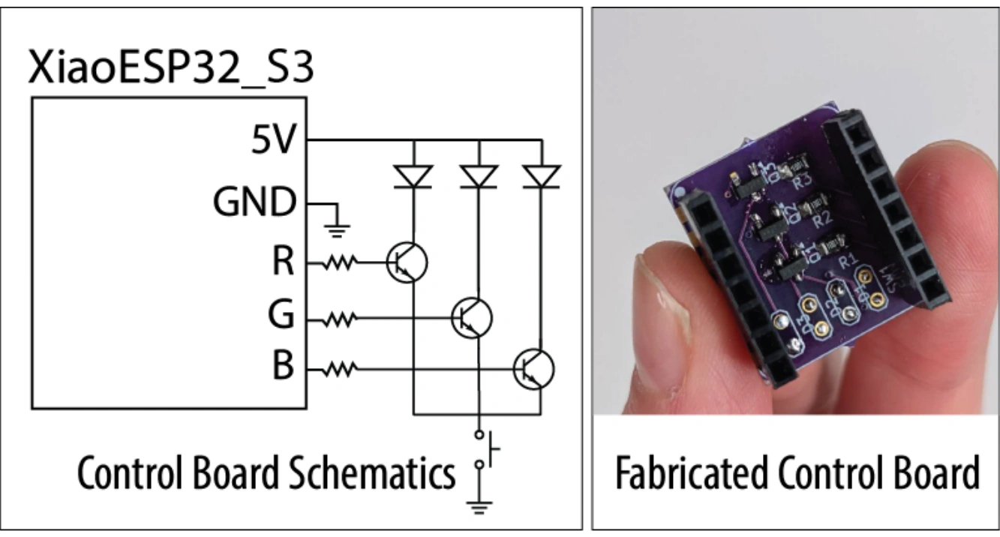
6 Technical Evaluation
We evaluate MorphoChrome across five dimensions: the color gamut, color quality, color saturation speed, output resolution, and beam size control. These measurements characterize both the visual output quality and the practical interaction properties of the system.
6.1 Color Space
To evaluate our color space, we measure color saturation time and available color gamut. We also validate color mixing and reflectivity by creating primary and secondary colors. Color Mixing: To validate that our device supports color mixing on the film, we exposed the film simultaneously with two primary laser wavelengths to produce secondary colors. Magenta was created by combining red and blue; yellow by combining green and red; cyan by combining green and blue. After exposure, the film was illuminated with a broadband halogen source [Tungsten-Halogen Light Source, Thorlabs] and the reflectance of each sample was measured. The resulting spectra each exhibit two distinct peaks corresponding to the wavelengths of the constituent primaries, confirming that MorphoChrome follows additive RGB color mixing. Secondary colors appear slightly dimmer than primaries because the photopolymer saturates independently per wavelength, resulting in normalized per-channel intensity.
We calculate the reflectance of each color by collecting raw data via a spectrometer with a halogen light source [ThorLabs Compact Spectrometer CCS10] and subtracting the base color of the film (which has a red tint). To calculate reflectivity, we use Gilbert and Haeberli’s reflectance formula, where our white sample is calibration reflectance standard [Edmund Optics No. 57005]: × 100%
The secondary colors, magenta, cyan, and yellow, are created by combining spectral features of the individual wavelengths.
Primary colors show single sharp laser peaks (Fig. 8): red at 655 nm (160%), green at 533 nm (500%), and blue at 453 nm (1400%). Secondary colors confirm additive mixing — yellow shows dual peaks at 533 nm (260%) and 655 nm (70%), magenta at 453 nm (500%) and 635 nm (110%), and cyan at 453 nm (240%) and 533 nm (460%). Reflectance values exceeding 100% are physically expected: unlike pigment-based surfaces, Lippmann holographic gratings act as narrowband mirrors whose peak reflectance within the Bragg window far exceeds the broadband white reference, even though integrated reflectance across the full spectrum remains below 100%. The large inter-channel variation — blue at 1400% versus red at 160% — is substantially an artifact of the halogen white light reference, which is spectrally weak at 450 nm, producing a small denominator in the reflectance equation and artificially inflating blue values. Additional characterization can be used to further characterize the color space. Color Gamut: We evaluated MorphoChrome’s color gamut by sampling the RGB space at 27 points across a 3×3×3 intensity grid (off, half, and full power per channel), supplemented by three experimentally determined secondary colors (cyan, magenta, and yellow). For each sample, we computed CIE 1931 chromaticity coordinates by integrating the reflected spectrum — clipped to three windows centered on the laser emission peaks (Blue: 420–480 nm, Green: 502–562 nm, Red: 640–700 nm) to isolate the structural color signal from halogen lamp background — against the CIE 1931 2° standard observer color matching functions. Figure 7 shows the resulting gamut on the CIE xy chromaticity diagram. MorphoChrome’s primaries extend beyond the sRGB triangle in the red and green corners, reflecting the narrow-band spectral peaks characteristic of Bragg-based structural color in holographic photopolymer film. Color Saturation Speed: To evaluate our color saturation speed for each channel in the MorphoChrome system, we fabricated color samples to assess the exposure times by illuminating the holographic photopolymer film for a time range: 25 ms through 3200 ms (log scale) as shown in Figure 9. The color was captured from a distance of 19mm, the focal length of our combined lens system. The exposed film was then illuminated using a broadband halogen light source, and the reflected spectrum was measured. The peak intensity of the reflected wavelength was extracted and normalized to represent the saturation level of the film. Saturation was plotted as a function of exposure time in Figure 9.
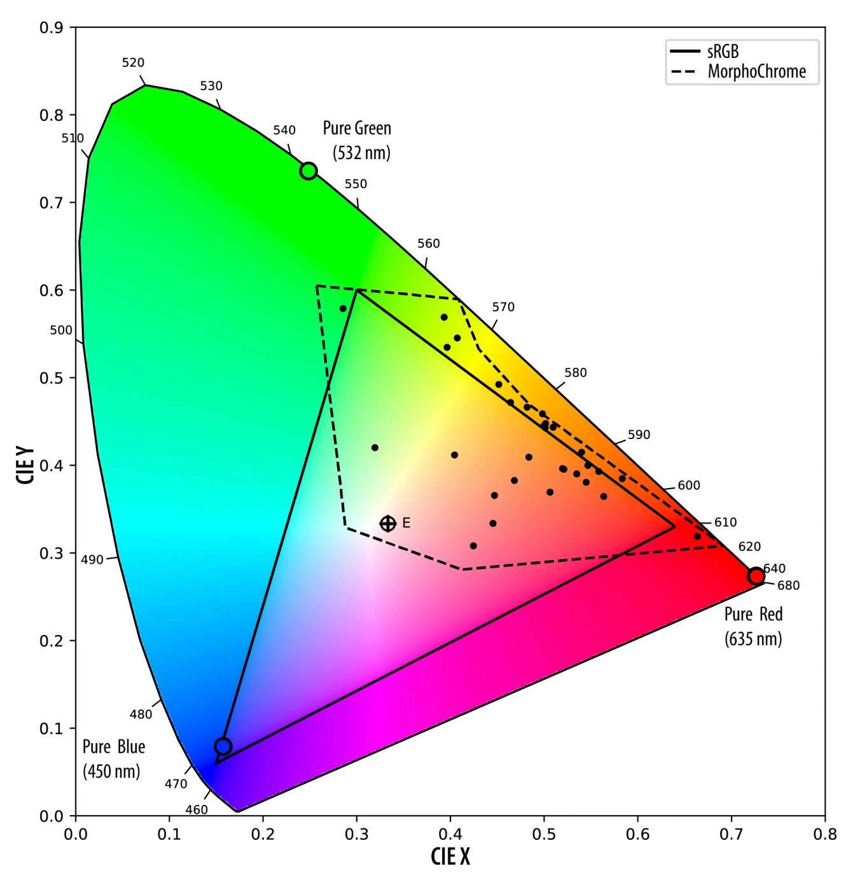
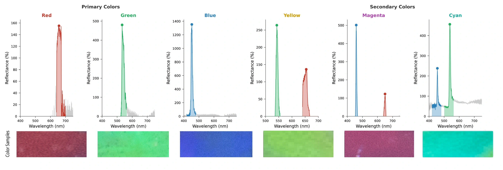
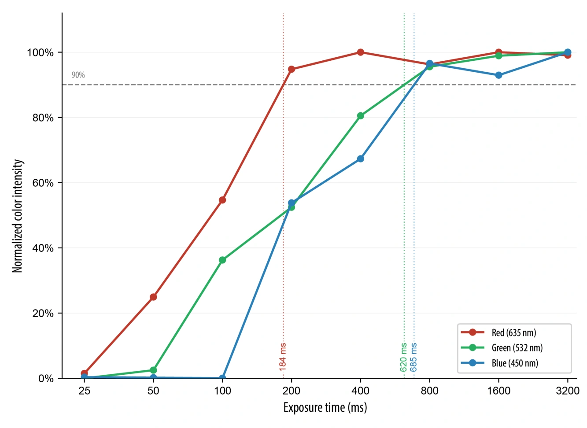
6.2 Output Resolution
In our system, the focal point of our beam is the narrowest point of the light output. To measure our system’s output resolution, we measured each laser diode’s exposure beam diameter at the system’s focal length (19 mm) with an 800 ms exposure time to ensure full saturation of each color (RGB). This yields an output resolution with a diameter of 700 μm. Our resolution is determined by the lens system rather than the holographic film, as holographic film’s theoretical resolution limit—half the wavelength of the recorded light—far exceeds the constraints of our optics. The output beam size of the device is determined by the distance between the device and the film. Due to collimated lens design, MorphoChrome’s aperture design enables continuous stroke width control through working distance, analogous to an airbrush, where distance from the surface governs diameter. Our system characterization takes place at 20 mm, just outside of the focal length, in the Rayleigh optical range for our design’s beam focal point (19 mm).
7 Applications
To demonstrate MorphoChrome, we present three application examples. Each application highlights personal customization, the iridescent color space, and the interactive nature of structurally colored fabrication enabled by MorphoChrome. The following applications are intended as demonstrations of the interaction potential of this medium.
7.1 Biomimetic Designs for Everyday Objects
We demonstrate integrating custom, biomimetic structural color into everyday objects through three application contexts (Fig. 10): a clothing embellishment (a hummingbird brooch that shifts from cyan to green to magenta as the wearer moves, mimicking the iridescent magenta throat patch of Anna’s Hummingbird (Calypte anna) through color mixing); a laptop sticker that remains vibrant under both diffuse indoor light and direct sunlight; and a window decal that projects shifting spectral color into the surrounding space as ambient daylight changes throughout the day. In each case, the user authored the design freehand — selecting color, varying exposure angle to program the iridescent shift range, and transferring the cured film to the target substrate via our resin process. This demonstrates a programmable fabrication workflow for biomimetic objects that was previously achievable only through industrial nanofabrication or direct use of iridescent natural materials like gemstones or shells.
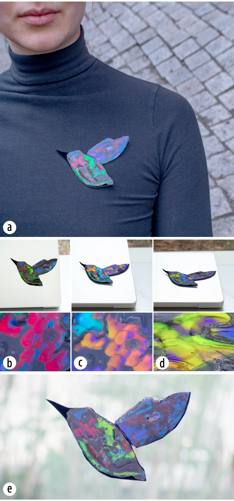
7.2 Kinematic, Secure Signatures
Kinematic signatures incorporate the unique physical movement of the signer (hand tilt, speed, and stroke) as a tool for fraud prevention and identity verification. While structural color has been explored for anti-counterfeiting via optically variable labels and inks, these approaches carry no information about the human’s unique gesture. Handwriting with MorphoChrome allows for the creation of an optically-unique kinematic signature: a signature that encodes the subtlety of one’s gesture and the unrepeatable complexity of optical nanostructures formed during direct optical writing. The natural variation in wrist angle that occurs during writing is physically inscribed into the holographic film’s nanostructures via the Bragg condition, so that the resulting sequence of colors across the signature — as it is tilted through viewing angles — is a direct physical record of that specific signing event. This enables the possibility of multi-layer authentication schemes that take into consideration both exposure angle and viewing angles. Because the color sequence is inscribed at signing time from the signer’s own hand motion, reproducing it requires not only reconstructing the exact optical conditions — wavelength, angle, and coherence — under which it was written, but also replicating the precise wrist-angle trajectory that produced each color transition, making it substantially harder to forge than a conventional ink signature, whose shape and color alone can be copied. In Figure 11, a signature for the fictional Lux Pictura shows this multi-layer authentication: The fictional signature “Lux Pictura” was written in a single green exposure at two writing angles (0° for “Lux”, 45° for “Pictura”), so “Lux” appears green and “Pictura” red with flecks of green (Figure 11b). Tilting from a 0° to a 45° viewing angle shifts the colors further via the Bragg condition: green becomes blue and red becomes green (Figure 11a).
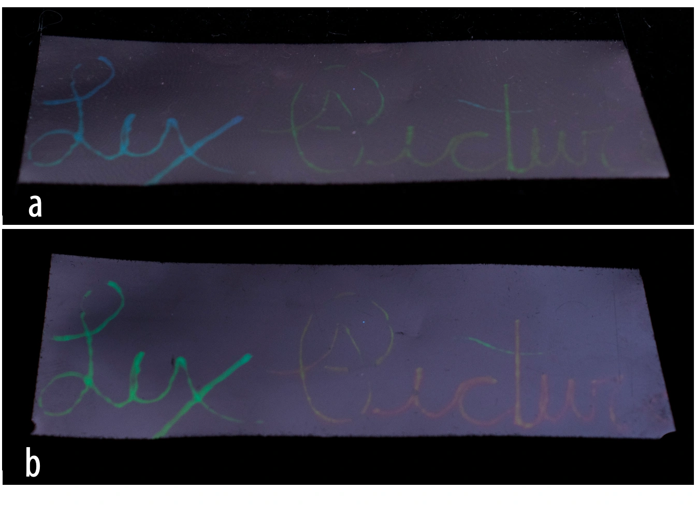
7.3 Angle-dependent Colorimetric Sensors
By applying holographic film directly to an object’s surface and exposing it in situ, MorphoChrome enables users to paint custom designs onto three-dimensional objects that function as passive colorimetric sensors — no electronics, no power, and no readout device required. We demonstrate this on a watering can (Fig. 12), as a floral pattern is painted stroke by stroke with MorphoChrome, then applied with resin on a velvet fabric backing and adhered to the can. The resulting design encodes two physically distinct color states into the same surface — red at 0° and a full iridescent spectrum at 45° — each readable with the naked eye from that specific viewing angle and illumination geometry, relative to the object’s fixed orientation; the state is not a fixed property that any observer can read from an arbitrary position, but depends on viewing the object from the corresponding angle under similar lighting. Crucially, the user makes live design decisions during fabrication: which regions to expose, how densely to paint, where color transitions fall across the curve. Because the color state is determined entirely by viewing angle, the surface passively reports orientation information under a controlled viewing geometry and never needs to be activated. This opens applications ranging from orientation indicators on fragile or valuable objects to authentication markers whose second state is revealed only to those who know to look from the correct angle.
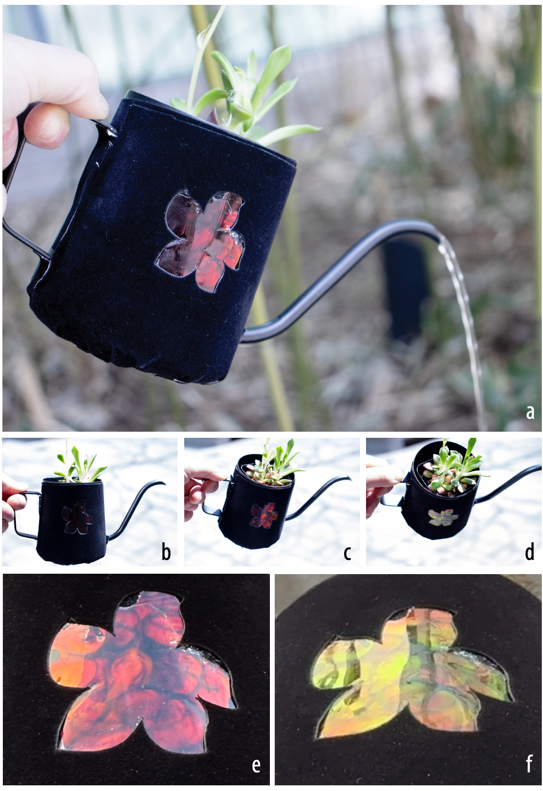
8 Limitations and Future Work
In this section, we discuss limitations of the current MorphoChrome method and outline directions for future work.
Red shift—the shift of a reflected color toward longer wavelengths (e.g., green to red)—can occur in holographic photopolymer films when they are fully enclosed in epoxy resin or come into contact with certain adhesives. This red shift arises from changes in the material’s internal structure during polymerization, which changes the grating spacing and alters the Bragg condition. Red shift is a well-known challenge in volume holography, especially for thick photopolymer layers used in reflection holograms, and it remains difficult to fully mitigate. In future work, we plan to collaborate with holographers and materials scientists to further investigate this phenomenon.
Future work could explore different aperture and lens geometries with improved optical efficiency and investigate additional UI tools for generating application-specific aperture designs for complex objects. Additional future work could explore on-device color selection through a mobile interface, removing the need for a tethered computer and enabling a fully untethered, freehand authoring workflow. At acute viewing angles, red structural color can shift into the infrared range, while blue structural color can shift into the ultraviolet range when viewed obliquely. Because IR and UV light lie outside the visible spectrum, these shifts enable images that partially or fully disappear at certain angles. Future work could explore applications that leverage this effect, such as angle-dependent invisibility, direction-sensitive tags, or unobtrusive sensing labels.
8.1 Laser Safety
All three laser diodes used in MorphoChrome are Class 3R, which is considered low-risk and safe according to the standard legal classification for consumer laser pointers in the United States. Eye protection is therefore not required for operation, though we recommend it out of caution, particularly for extended use or direct beam viewing.
9 Conclusion
In MorphoChrome, we demonstrated how we can use a handheld, programmable optical device with commercially available holographic photopolymer film to fabricate multi-color structural color interactively. We discussed the optical design requirements necessary to achieve color-mixing with laser light that produces structural color (light intensity, spectral wavelengths, film exposure time). We detail how to compactly direct and mix red, blue, and green laser light with beam combining via dichroic mirrors and lenses to produce multicolor outputs that form photonic structures within the film at different wavelengths. We provide a physics-based user interface for controlling the device which includes easy, device color selection and subsequent iridescent color preview. Lastly, we introduce a new, fast adhesion process to transfer the film to diverse objects with curved and flat surfaces and diverse material compositions using UV-curing resin to integrate personalized structural color design with existing fabrication processes. For future work, we plan to collaborate with material science researchers to address current limitations with film adhesion and increase our device’s multi-color design space.
Acknowledgments
We would like to thank the National Science Foundation Graduate Research Fellowship Program (NSF GRFP) and the MathWorks Fellowship Program for their financial support of this work. We also would like to sincerely thank MIT Media Lab Professors Tod Machover and Zach Lieberman for their interdisciplinary feedback and mentorship on earlier versions of this research. Thank you to MIT MechE Professor George Barbastathis for his essential feedback on our system’s early optical design. Thank you to Jackson Reason for his essential feedback, edits, and support. Lastly, we extend a special thank you to Paul Christie and the LitiHolo team for providing specialty holographic materials in support of this work.